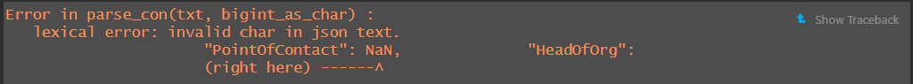

Code
pacman::p_load(jsonlite, tidygraph, ggraph, igraph,
visNetwork, tidyverse, tidytext, skimr,
DT, lubridate, plotly, clock, graphlayouts)Ho Zi Jun
June 2, 2024
May 31, 2024
Oceanus has a dynamic business landscape with frequent startups, mergers, acquisitions and investments. FishEye International monitors commercial fishing operators to prevent illegal fishing in the region’s sensitive marine ecosystem. Analysts use a hybrid automated/manual process to transform company records into CatchNet: the Oceanus Knowledge Graph.
Last year, SouthSeafood Express Corp was caught fishing illegally, disrupting the commercial fishing sector. FishEye aims to analyze the temporal patterns and impacts of this incident on the fishing market. The competitive nature of the market might lead some businesses to seize SouthSeafood’s market share, while others may recognize the consequences of illegal fishing.
The project will focus on 2 out of the 4 tasks from VAST Challenge 2024: Mini-Challenge 3
This study aims to develop visualisation tools that work with CatchNet to identify the people who hold influence over business networks and hold those who own nefarious companies accountable. That is especially difficult with varied and changing shareholder and ownership relationships. The tasks are:
In this hands-on exercise, four network data modelling and visualisation packages will be installed and launched. They are igraph, tidygraph, ggraph and visNetwork. Beside these four packages, tidyverse, lubridate, clock and graphlayouts will be installed and launched too.
| Packages | Description |
|---|---|
| jsonlite | |
| tidygraph | A Tidy API for Graph Manipulation |
| ggraph | an extension of the ggplot2 API tailored to graph visualizations and provides the same flexible approach to building up plots layer by layer |
| igraph | For Network Analysis and Visualization |
| visNetwork | a R package for network visualization, using vis.js javascript library (https://visjs.org) |
| tidyverse | a family of modern R packages specially designed to support data science, analysis and communication task including creating static statistical graphs |
| tidytext | |
| skimr | |
| DT | |
| lubridate | an R package specially designed to handle and wrangle time data |
| plotly | |
| clock | package providing a comprehensive set of tools for working with date-times |
| graphlayouts | package implements some graph layout algorithms that are not available in igraph or other packages |
The code chunk:
In the code chunk below, fromJSON() of jsonlite package is used to import MC3.json file into the R environment.
Initially, when trying to load the mc3.json data we faced an error message regarding a NaN issue.
 Hence we converted solely the NaN fields to “NaN” to curb this issue and the mc3.json file is imported successfully.
The output is called mc3. It is a large list R object. There are two data sets. One contains the nodes data and the other contains the edges (also know as link) data.
In this section, we will extract and wrangle the edges object.
The code chunk below will be used to extract the links data.frame of mc3 and saves it as a tibble data.frame called mc3_edges.
glimpse() of dplyr will be used to reveal the structure of mc3_edges tibble data.table
Rows: 75,817
Columns: 11
$ start_date <chr> "2016-10-29T00:00:00", "2035-06-03T00:00:00", "202…
$ type <chr> "Event.Owns.Shareholdership", "Event.Owns.Sharehol…
$ `_last_edited_by` <chr> "Pelagia Alethea Mordoch", "Niklaus Oberon", "Pela…
$ `_last_edited_date` <chr> "2035-01-01T00:00:00", "2035-07-15T00:00:00", "203…
$ `_date_added` <chr> "2035-01-01T00:00:00", "2035-07-15T00:00:00", "203…
$ `_raw_source` <chr> "Existing Corporate Structure Data", "Oceanus Corp…
$ `_algorithm` <chr> "Automatic Import", "Manual Entry", "Automatic Imp…
$ source <chr> "Avery Inc", "Berger-Hayes", "Bowers Group", "Bowm…
$ target <chr> "Allen, Nichols and Thompson", "Jensen, Morris and…
$ key <int> 0, 0, 0, 0, 0, 0, 0, 0, 0, 0, 0, 0, 0, 0, 0, 0, 0,…
$ end_date <chr> NA, NA, NA, NA, NA, NA, NA, NA, NA, NA, NA, NA, NA…_last_edited_by) start with “_” and will have to be renamed to avoid unnecessary coding issues in the later part of the tasks.The code chunk below uses as_datetime() of the lubridate package to convert fields with character date into POSIXt format.
Next, glimpse() function will be used to confirm if the process have been performed correctly.
Rows: 75,817
Columns: 11
$ start_date <dttm> 2016-10-29, 2035-06-03, 2028-11-20, 2024-09-04, 2…
$ type <chr> "Event.Owns.Shareholdership", "Event.Owns.Sharehol…
$ `_last_edited_by` <chr> "Pelagia Alethea Mordoch", "Niklaus Oberon", "Pela…
$ `_last_edited_date` <dttm> 2035-01-01, 2035-07-15, 2035-01-01, 2035-01-01, 2…
$ `_date_added` <dttm> 2035-01-01, 2035-07-15, 2035-01-01, 2035-01-01, 2…
$ `_raw_source` <chr> "Existing Corporate Structure Data", "Oceanus Corp…
$ `_algorithm` <chr> "Automatic Import", "Manual Entry", "Automatic Imp…
$ source <chr> "Avery Inc", "Berger-Hayes", "Bowers Group", "Bowm…
$ target <chr> "Allen, Nichols and Thompson", "Jensen, Morris and…
$ key <int> 0, 0, 0, 0, 0, 0, 0, 0, 0, 0, 0, 0, 0, 0, 0, 0, 0,…
$ end_date <dttm> NA, NA, NA, NA, NA, NA, NA, NA, NA, NA, NA, NA, N…In the code chunk below, rename() of dplyr package is used to change the following fields that start with “_”.
Next, glimpse() function will be used to confirm if the process have been performed correctly.
Rows: 75,817
Columns: 11
$ start_date <dttm> 2016-10-29, 2035-06-03, 2028-11-20, 2024-09-04, 2034…
$ type <chr> "Event.Owns.Shareholdership", "Event.Owns.Shareholder…
$ last_edited_by <chr> "Pelagia Alethea Mordoch", "Niklaus Oberon", "Pelagia…
$ last_edited_date <dttm> 2035-01-01, 2035-07-15, 2035-01-01, 2035-01-01, 2035…
$ date_added <dttm> 2035-01-01, 2035-07-15, 2035-01-01, 2035-01-01, 2035…
$ raw_source <chr> "Existing Corporate Structure Data", "Oceanus Corpora…
$ algorithm <chr> "Automatic Import", "Manual Entry", "Automatic Import…
$ source <chr> "Avery Inc", "Berger-Hayes", "Bowers Group", "Bowman-…
$ target <chr> "Allen, Nichols and Thompson", "Jensen, Morris and Do…
$ key <int> 0, 0, 0, 0, 0, 0, 0, 0, 0, 0, 0, 0, 0, 0, 0, 0, 0, 0,…
$ end_date <dttm> NA, NA, NA, NA, NA, NA, NA, NA, NA, NA, NA, NA, NA, …From the screenshot below, we can see that the text in type field are not in a tidy manner.
We are going to tidy the type column by creating two columns as shown below.
Firstly, to split the text in type column into two columns; namely event 1 and event2
The code chunk below will be used to find the maximum number of elements in any split
The code chunk below will be used to pad shorter splits with NA values to make them all the same length.
Since the output above is a matrix, the code chunk below is used to convert word_df into a tibble data.frame.
[1] "tbl_df" "tbl" "data.frame"Now the extracted columns are appended back into the mc3_edges tibble data.frame
To save mc3_edges into R rds file format
In this section, we will extract and wrangle the nodes object.
The code chunk below will be used to extract the nodes data.frame of mc3 and parses it as a tibble data.frame called mc3_nodes.
Next, glimpse() function will be used to confirm if the process have been performed correctly.
Rows: 60,520
Columns: 15
$ type <chr> "Entity.Organization.Company", "Entity.Organizatio…
$ country <chr> "Uziland", "Mawalara", "Uzifrica", "Islavaragon", …
$ ProductServices <chr> "Unknown", "Furniture and home accessories", "Food…
$ PointOfContact <chr> "Rebecca Lewis", "Michael Lopez", "Steven Robertso…
$ HeadOfOrg <chr> "Émilie-Susan Benoit", "Honoré Lemoine", "Jules La…
$ founding_date <chr> "1954-04-24T00:00:00", "2009-06-12T00:00:00", "202…
$ revenue <dbl> 5994.73, 71766.67, 0.00, 0.00, 4746.67, 46566.67, …
$ TradeDescription <chr> "Unknown", "Abbott-Gomez is a leading manufacturer…
$ `_last_edited_by` <chr> "Pelagia Alethea Mordoch", "Pelagia Alethea Mordoc…
$ `_last_edited_date` <chr> "2035-01-01T00:00:00", "2035-01-01T00:00:00", "203…
$ `_date_added` <chr> "2035-01-01T00:00:00", "2035-01-01T00:00:00", "203…
$ `_raw_source` <chr> "Existing Corporate Structure Data", "Existing Cor…
$ `_algorithm` <chr> "Automatic Import", "Automatic Import", "Automatic…
$ id <chr> "Abbott, Mcbride and Edwards", "Abbott-Gomez", "Ab…
$ dob <chr> NA, NA, NA, NA, NA, NA, NA, NA, NA, NA, NA, NA, NA…flowchart LR
A[Hard edge] --> B(Round edge)
B --> C{Decision}
C --> D[Result one]
C --> E[Result two]
Visit Option to find out more about visOption’s argument.